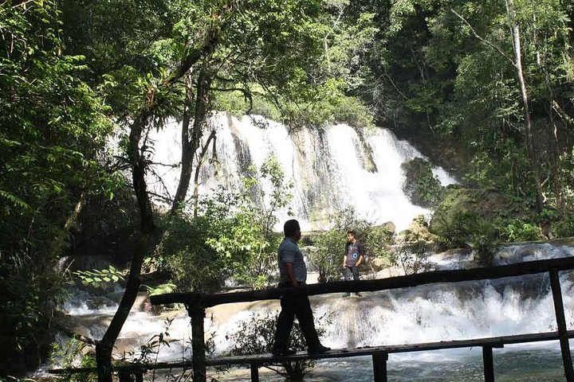

What to do in Palenque?
The city of Palenque is full of history and beauty. In your adventure to Palenque, you can explore the ancient Mayan ruins and you can hike through the forest to find the Cascadas de Agua Azul or the Cascadas de Misol-Ha. If you would like to discover more to do while visiting Palenque, click the image to the left.
Where is Palenque?
Palenque is a small town filled with ancient Mayan ruins in southern Mexico, close to the Mexcio-Guatemala border. If you would like to see a more detailed map of Palenque, click the image to the right.
How to get to Palenque?
The most efficient way to get to Palenque is by flying into Villahermosa and then taking the bus to Palenque. You can also take the bus from all major cities in Mexico to get to Palenque. If you want to learn more about your options of travel to Palenque, click the image to the left.


Want to see more images of Palenque? Click the image to the right!